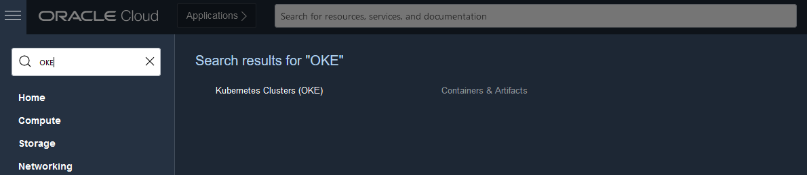
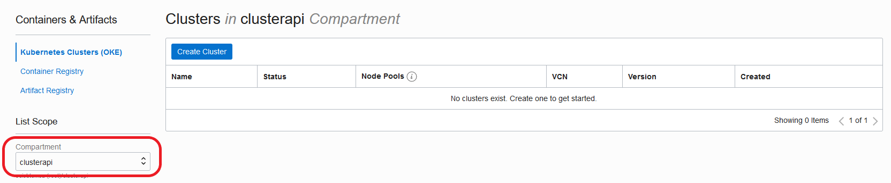
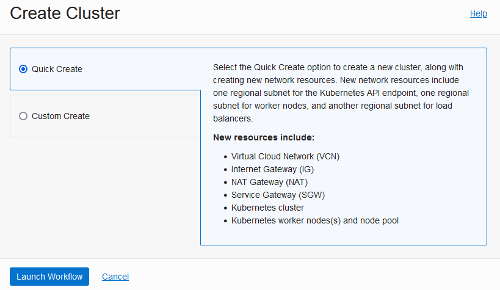
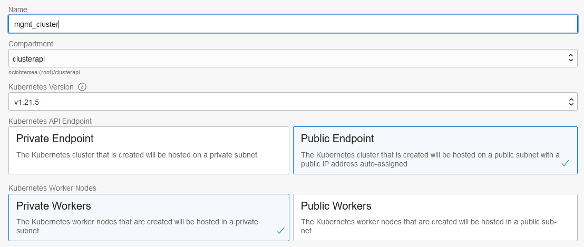

Kubernetes Cluster API Provider for Oracle Cloud Infrastructure
Kubernetes-native declarative infrastructure for Oracle Cloud Infrastructure (OCI).
What is the Cluster API Provider for OCI
The Cluster API Provider for OCI (CAPOCI) brings declarative, Kubernetes-style APIs to cluster creation, configuration and management.
The API itself is shared across multiple cloud providers allowing for true hybrid deployments of Kubernetes.
Features
- Manages the bootstrapping of VCNs, gateways, subnets, network security groups and instances
- Deploy either Oracle Linux or Ubuntu based instances using custom images built with the Image Builder tool
- Deploys Kubernetes control plane into private subnets front-ended by a public load balancer
- Provides secure and sensible defaults
Getting Started
- Prerequisites: Set up your OCI tenancy before using CAPOCI.
- Deployment process: Choosing your deployment path
- Networking: Networking guide
- Installation:
Support Policy
Info
As the versioning for this project is tied to the versioning of Cluster API, future modifications to this policy may be made to more closely align with other providers in the Cluster API ecosystem.
Cluster API Versions
| v1beta1 (v1.0) | |
|---|---|
| OCI Provider v1beta1 (v0.1) | ✓ |
Supported Kubernetes versions
| v1.20 | v1.21 | |
|---|---|---|
| OCI Provider v1beta1 (v0.1) | ✓ | ✓ |
Prerequisites
Requirements
Getting started
This section contains information about enabling and configuring various Oracle Cloud Infrastructure (OCI) resources using the Kubernetes Cluster API Provider for OCI.
Getting started with Kubernetes Cluster API Provider for Oracle Cloud Infrastructure
Before deploying the Cluster API Provider for Oracle Cloud Infrastructure (CAPOCI), you must first configure the required Identity and Access Management (IAM) policies:

The following deployment options are available:
The following workflow diagrams provide a high-level overview of each deployment method described above:
Setting up a non-production management cluster

Setting up a management cluster using an initial bootstrap cluster

Setting up a management cluster using OKE

Setting up a management cluster using a 3rd party Kubernetes cluster

Complete the following steps in order to install and use CAPOCI:
- Choose your management cluster. You can use kind, OKE or any other compliant Kubernetes clusters.
- Prepare custom machine images
- Configure users and policies for the management cluster if required
- Provision a management cluster. You can use kind, OKE or any other compliant Kubernetes clusters.
- Install the necessary tools:
- Configure IAM for the workload cluster.
- Install Kubernetes Cluster API for Oracle Cloud Infrastructure (CAPOCI) in the management cluster.
- Create a workload cluster.
Configure Custom Machine Images
An image is a template of a virtual hard drive. It determines the operating system and other software for a compute instance. In order to use CAPOCI, you must prepare one or more custom images which have all the necessary Kubernetes components pre-installed. The custom image(s) will then be used to instantiate the Kubernetes nodes.
Building a custom image
To create your own custom image in your Oracle Cloud Infrastructure (OCI) tenancy, navigate to The Image Builder Book and follow the instructions for OCI.
Configure user and policies
- Configure policies for an OKE cluster
- Configure policies for a self-provisioned cluster
- User configuration and OCIDs
Configure OCI policies for an Oracle Container Engine for Kubernetes cluster
These steps are applicable if you intend to run your management cluster using Oracle Container Engine for Kubernetes (OKE). They need to be created by a user with admin privileges and are required so you can provision your OKE cluster successfully. If you plan to run your management cluster in kind or a non-OKE cluster, you can skip this step.
- Create a user in OCI e.g.
iaas_oke_usr - Create a group in OCI e.g.
iaas_oke_grpand add the useriaas_oke_usrto this group - Create a policy in OCI and add the following policies:
Allow group iaas_oke_grp to manage dynamic groupsAllow group iaas_oke_grp to manage virtual-network-family in <compartment>Allow group iaas_oke_grp to manage cluster family in <compartment>Allow group iaas_oke_grp to manage instance-family in <compartment>
where <compartment> is the name of the OCI compartment of the management cluster. Refer to the OCI documentation if you have not created a compartment yet.
Warning
You should not create your management cluster in the root compartment.
Configure policies for a self-provisioned cluster
Although some policies required for Oracle Container Engine for Kubernetes (OKE) and self-provisioned clusters may overlap, we recommend you create another user and group for the principal that will be provisioning the self-provisioned clusters.
- Create a user in OCI e.g.
cluster_api_usr - Create a group in OCI e.g.
cluster_api_grpand add the usercluster_api_usrto this group - Create a policy in OCI and add the following policies:
Allow group cluster_api_grp to manage virtual-network-family in <compartment>Allow group cluster_api_grp to manage load-balancers in <compartment>Allow group cluster_api_grp to manage instance-family in <compartment>
where <compartment> is the name of the OCI compartment of the workload cluster. Your workload compartment may be different from the management compartment. Refer to the OCI documentation if you have not created a compartment yet.
Info
If you are an administrator and you are experimenting with CAPOCI, you can skip creating the policies.
- Repeat the procedure as for the
iaas_oke_usrabove to obtain the IAM details.
Warning
You should not create your workload cluster in the root compartment.
User configuration and OCIDs
-
Login as the
iaas_oke_usrin the OCI Console to configure your OCI key. You can either use the OCI console or openssl to generate an API key. -
Obtain the following details which you will need in order to create your management cluster with OKE:
<compartment>OCID- Navigate to Identity > Compartments
- Click on your compartment
- Locate OCID on the page and click on Copy
- Tenancy OCID
- User OCID
- API key fingerprint
Provision a management cluster
Cluster API Provider for Oracle Cloud Infrastructure is installed into an existing Kubernetes cluster, called the management cluster.
You may use kind for experimental purposes or for creating a local bootstrap cluster which you will then use to provision a target management cluster.
For a more durable environment, we recommend using a managed Kubernetes service such as Oracle Container Engine for Kubernetes (OKE).
Provision a management cluster using kind
-
Create the cluster
kind create cluster -
Configure access
kubectl config set-context kind-kind
Provision a management cluster with Oracle Container Engine for Kubernetes
For this release, if you use Oracle Container Engine for Kubernetes (OKE) for your management cluster, you will be provisioning a public Kubernetes cluster i.e. its API server must be accessible to kubectl. You can use either use the OCI console to do the provisioning or the terraform-oci-oke project.
-
Login to the OCI Console as the
iaas_oke_usr -
Search for OKE and select it:

-
Select the right compartment where you will be creating the OKE Cluster:

-
Click Create Cluster, select Quick Create and click Launch Workflow:

-
Name your cluster and ensure you select Public Endpoint and choose Private Workers:

-
Click Next and Create Cluster.
-
When the cluster is ready, set up access to the OKE cluster. You can either use
Warning
If you are working with an existing Kubernetes cluster and have an existing kubeconfig in your $HOME/.kube/config directory, running the command to set up local access will add a new cluster context to your existing kubeconfig.
Install Cluster API Provider for Oracle Cloud Infrastructure
-
If you are not using kind for your management cluster, export the
KUBECONFIGenvironment variable to point to the correct Kubeconfig file.export KUBECONFIG=/path/to/kubeconfig -
Create a file
clusterctl.yamlin$HOME/.cluster-api/touch "$HOME"/.cluster-api/clusterctl.yaml -
Add the Oracle Cloud Infrastructure (OCI) Provider in
clusterctl.yaml:providers: - name: oci url: https://github.com/oracle/cluster-api-provider-oci/releases/v0.1.0/infrastructure-components.yaml type: InfrastructureProvider
Configure authentication
Before installing Cluster API Provider for OCI (CAPOCI), you must first set up your preferred authentication mechanism using specific environment variables:
export OCI_TENANCY_ID=<tenancy-id>
export OCI_USER_ID=<user-id>
export OCI_CREDENTIALS_FINGERPRINT=<fingerprint>
export OCI_REGION=<region>
# if Passphrase is present
export OCI_CREDENTIALS_PASSPHRASE=<passphrase>
export OCI_TENANCY_ID_B64="$(echo -n "$OCI_TENANCY_ID" | base64 | tr -d '\n')"
export OCI_CREDENTIALS_FINGERPRINT_B64="$(echo -n "$OCI_CREDENTIALS_FINGERPRINT" | base64 | tr -d '\n')"
export OCI_USER_ID_B64="$(echo -n "$OCI_USER_ID" | base64 | tr -d '\n')"
export OCI_REGION_B64="$(echo -n "$OCI_REGION" | base64 | tr -d '\n')"
export OCI_CREDENTIALS_KEY_B64=$(base64 < <path-to-api-private-key-file> | tr -d '\n')
# if Passphrase is present
export OCI_CREDENTIALS_PASSPHRASE_B64="$(echo -n "OCI_CREDENTIALS_PASSPHRASE" | base64 | tr -d '\n')"
Initialize management cluster
Initialize management cluster and install CAPOCI
clusterctl init --infrastructure oci
CAPOCI Components
When installing CAPOCI, the following components will be installed in the management cluster:
- A custom resource definition (
CRD) forOCICluster, which is a Kubernetes custom resource that represents a workload cluster created in OCI by CAPOCI. - A custom resource definition (
CRD) forOCIMachine, which is a Kubernetes custom resource that represents one node in the workload cluster created in OCI by CAPOCI. - Role-based access control resources for a Kubernetes
Deployment,ServiceAccount,Role,ClusterRoleandClusterRoleBinding - A Kubernetes
Secretwhich will hold OCI credentials - A Kubernetes
Deploymentwith the CAPOCI image - ghcr.io/oracle/cluster-api-oci-controller:<version>
Please inspect the infrastructure-components.yaml present in the release artifacts to know more.
Create a workload cluster
Workload Cluster Templates
The workload cluster templates can be downloaded from the latest released artifacts.
Workload Cluster Parameters
The following Oracle Cloud Infrastructure (OCI) configuration parameters are available when creating a workload cluster on OCI:
| Parameter | Default Value | Description |
|---|---|---|
OCI_COMPARTMENT_ID | The OCID of the compartment where the OCI resources are to be created | |
OCI_IMAGE_ID | The OCID of the Compute Image (Oracle Linux or Ubuntu) with which to create the Kubernetes nodes | |
OCI_SHAPE | VM.Standard.E4.Flex | The shape of the Kubernetes nodes |
OCI_SHAPE_MEMORY_IN_GBS | The amount of memory to be allocated to the instances. If not provided it is automatically computed by compute API. | |
OCI_SHAPE_OCPUS | 1 | The number of OCPUs allocated to the instance |
OCI_SSH_KEY | The public SSH key to be added to the Kubernetes nodes. It can be used to login to the node and troubleshoot failures. | |
OCI_PV_TRANSIT_ENCRYPTION | true | In-transit encryption provides a way to secure your data between instances and mounted file systems using TLS v.1.2 (Transport Layer Security) encryption. Only some bare metal instances support In-transit encryption |
The following Cluster API parameters are also available:
| Parameter | Default Value | Description |
|---|---|---|
CLUSTER_NAME | The name of the workload cluster to create | |
CONTROL_PLANE_MACHINE_COUNT | 1 | The number of control plane machines for the workload cluster. |
KUBERNETES_VERSION | The Kubernetes version to use for the workload cluster. If unspecified, the value from OS environment variables or the .cluster-api/clusterctl.yaml config file will be used. | |
NAMESPACE | The namespace to use for the workload cluster. If unspecified, the current namespace will be used | |
POD_CIDR | 1 | The CIDR range for the Kubernetes POD network. |
SERVICE_CIDR | The CIDR for the Kubernetes services network. | |
SERVICE_DOMAIN | ||
WORKER_MACHINE_COUNT | The number of worker machines for the workload cluster. |
Using an Ubuntu custom image on virtual instances
Run the command below to create a Kubernetes cluster with 1 control plane node and 1 worker node:
OCI_COMPARTMENT_ID=<compartment-id> \
OCI_IMAGE_ID=<ubuntu-custom-image-id> \
OCI_SHAPE=VM.Standard.E4.Flex \
OCI_SHAPE_OCPUS=1 \
OCI_SHAPE_MEMORY_IN_GBS= \
OCI_SSH_KEY=<ssh-key> \
CONTROL_PLANE_MACHINE_COUNT=1 \
KUBERNETES_VERSION=v1.20.10 \
NAMESPACE=default \
WORKER_MACHINE_COUNT=1 \
clusterctl generate cluster <cluster-name>\
--from cluster-template.yaml | kubectl apply -f -
Using an Ubuntu custom image on bare metal instances
Note the addition of OCI_PV_TRANSIT_ENCRYPTION=false which is required for most BM shapes.
OCI_COMPARTMENT_ID=<compartment-id> \
OCI_IMAGE_ID=<ubuntu-custom-image-id> \
OCI_SHAPE=BM.Standard2.52 \
OCI_SHAPE_OCPUS=52 \
OCI_SHAPE_MEMORY_IN_GBS= \
OCI_SSH_KEY=<ssh-key> \
OCI_PV_TRANSIT_ENCRYPTION=false \
CONTROL_PLANE_MACHINE_COUNT=1 \
KUBERNETES_VERSION=v1.20.10 \
NAMESPACE=default \
WORKER_MACHINE_COUNT=1 \
clusterctl generate cluster <cluster-name>\
--from cluster-template.yaml| kubectl apply -f -
Using an Oracle Linux custom image on virtual instances
OCI_COMPARTMENT_ID=<compartment-id> \
OCI_IMAGE_ID=<oracle-linux-custom-image-id> \
OCI_SHAPE=VM.Standard.E4.Flex \
OCI_SHAPE_OCPUS=1 \
OCI_SHAPE_MEMORY_IN_GBS= \
OCI_SSH_KEY=<ssh-key> \
CONTROL_PLANE_MACHINE_COUNT=1 \
KUBERNETES_VERSION=v1.20.10 \
NAMESPACE=default \
WORKER_MACHINE_COUNT=1 \
clusterctl generate cluster <cluster-name>\
--from cluster-template-oraclelinux.yaml | kubectl apply -f -
Access workload cluster Kubeconfig
Execute the following command to list all the workload clusters present:
kubectl get clusters -A
Execute the following command to access the kubeconfig of a workload cluster:
clusterctl get kubeconfig <cluster-name> -n default > <cluster-name>.kubeconfig
Install a CNI Provider
After creating a workload cluster, a CNI provider must be installed in the workload cluster. Until you install a
a CNI provider, the cluster nodes will not go into the Ready state.
For example, you can install Calico as follows:
kubectl --kubeconfig=<cluster-name>.kubeconfig \
apply -f https://docs.projectcalico.org/v3.21/manifests/calico.yaml
You can use your preferred CNI provider. Currently, the following providers have been tested and verified to work:
| CNI | CNI Version | Kubernetes Version | CAPOCI Version |
|---|---|---|---|
| Calico | 3.21 | 1.20.10 | 0.1 |
| Antrea | 1.20.10 | 0.1 |
If you have tested an alternative CNI provider and verified it to work, please send us a PR to add it to the list.
If you have an issue with your alternative CNI provider, please raise an issue on GitHub.
Install OCI Cloud Controller Manager and CSI in a self-provisioned cluster
By default, the OCI Cloud Controller Manager (CCM) is not installed into a workload cluster. To install the OCI CCM, run the following command:
OCI_IMAGE_ID=<ubuntu-custom-image-id> \
OCI_COMPARTMENT_ID=<compartment-id> \
WORKER_MACHINE_COUNT=1 \
OCI_SHAPE=VM.Standard.E4.Flex \
OCI_SHAPE_OCPUS=1 \
OCI_SHAPE_MEMORY_IN_GBS= \
OCI_SSH_KEY=<ssh-key> \
clusterctl generate cluster <cluster-name> --kubernetes-version v1.20.10 \
--target-namespace default \
--control-plane-machine-count=1 \
--from cluster-template-oci-addons.yaml | kubectl apply -f -
Create Workload Templates for Oracle Cloud Infrastructure
You can create workload clusters based on template files or you can also save the templates in ConfigMaps that you can then reuse.
Creating cluster templates ConfigMaps
- Create a cluster template for Oracle Linux:
kubectl create cm oracletemplate --from-file=template=templates/cluster-template-oraclelinux.yaml
- Create a cluster template for Ubuntu:
kubectl create cm ubuntutemplate --from-file=template=templates/cluster-template.yaml
You can then reuse the ConfigMap to create your clusters. For example, to create a workload cluster using Oracle Linux, you can create it as follows:
OCI_COMPARTMENT_ID=<compartment-id> \
OCI_IMAGE_ID=<oracle-linux-custom-image-id> \
OCI_SHAPE=VM.Standard.E4.Flex \
OCI_SHAPE_OCPUS=1 \
OCI_SHAPE_MEMORY_IN_GBS= \
OCI_SSH_KEY=<ssh-key> \
CONTROL_PLANE_MACHINE_COUNT=1 \
KUBERNETES_VERSION=v1.20.10 \
NAMESPACE=default \
WORKER_MACHINE_COUNT=1 \
clusterctl generate cluster <cluster-name>\
--from-config-map oracletemplate | kubectl apply -f -
Likewise, to create a workload cluster using Ubuntu:
OCI_COMPARTMENT_ID=<compartment-id> \
OCI_IMAGE_ID=<ubuntu-custom-image-id> \
OCI_SHAPE=VM.Standard.E4.Flex \
OCI_SHAPE_OCPUS=1 \
OCI_SHAPE_MEMORY_IN_GBS= \
OCI_SSH_KEY=<ssh-key> \
CONTROL_PLANE_MACHINE_COUNT=1 \
KUBERNETES_VERSION=v1.20.10 \
NAMESPACE=default \
WORKER_MACHINE_COUNT=1 \
clusterctl generate cluster <cluster-name>\
--from-config-map ubuntutemplate | kubectl apply -f -
Externally managed infrastructure
By default, Cluster API will create resources on Oracle Cloud Infrastructure (OCI) when instantiating a new workload cluster. However, it is possible to have Cluster API re-use an existing OCI infrastructure instead of creating a new one. The existing infrastructure could include:
- Virtual cloud networks (VCNs)
- Network load balancers used as Kubernetes API Endpoint
CAPOCI supports externally managed cluster infrastructure.
If the OCICluster resource includes a cluster.x-k8s.io/managed-by annotation, then the controller will skip any reconciliation.
This is useful for scenarios where a different persona is managing the cluster infrastructure out-of-band while still wanting to use CAPOCI for automated machine management.
Example OCICluster Spec with external infrastructure
The following OCICluster Spec includes the mandatory fields to be specified for externally managed infrastructure to work properly.
apiVersion: infrastructure.cluster.x-k8s.io/v1beta1
kind: OCICluster
metadata:
labels:
cluster.x-k8s.io/cluster-name: "${CLUSTER_NAME}"
annotations:
cluster.x-k8s.io/managed-by: "external"
name: "${CLUSTER_NAME}"
spec:
compartmentId: "${OCI_COMPARTMENT_ID}"
controlPlaneEndpoint:
host: <Control Plane Endpoint Address should go here>
port: 6443
networkSpec:
apiServerLoadBalancer:
loadBalancerId: <OCID of Control Plane Endpoint LoadBalancer>
vcn:
id: <OCID of VCN>
networkSecurityGroups:
- id: <OCID of Control Plane NSG>
name: <Name of Control Plane NSG>
role: control-plane
- id: <OCID of Worker NSG>
name: <Name of Worker NSG>
role: worker
subnets:
- id: <OCID of Control Plane Subnet>
role: control-plane
- id: <OCID of Worker Subnet>
role: worker
Status
As per the Cluster API Provider specification, the OCICluster Status Object has to be updated with ready status
as well as the failure domain mapping. This has to be done after the OCICluster object has been created in the management cluster.
The following cURL request illustrates this:
Get a list of Availability Domains of the region:
oci iam availability-domain list
Info
Review the OCI CLI documentation for more information regarding this tool.
For 1-AD regions, use the following cURL command to update the status object:
curl -o -s -X PATCH -H "Accept: application/json, */*" \
-H "Content-Type: application/merge-patch+json" \
--cacert ca.crt \
--cert client.crt \
--key client.key \
https://<management-plane-api-endpoint>/apis/infrastructure.cluster.x-k8s.io/v1beta1/namespaces/<cluster-namespace>/ociclusters/<cluster-name>/status \
--data '{"status":{"ready":true,"failureDomains":{"1":{"attributes":{"AvailabilityDomain":"zkJl:AP-HYDERABAD-1-AD-1","FaultDomain":"FAULT-DOMAIN-1"},"controlPlane":true},"2":{"attributes":{"AvailabilityDomain":"zkJl:AP-HYDERABAD-1-AD-1","FaultDomain":"FAULT-DOMAIN-2"},"controlPlane":true},"3":{"attributes":{"AvailabilityDomain":"zkJl:AP-HYDERABAD-1-AD-1","FaultDomain":"FAULT-DOMAIN-3"}}}}}'
For 3-AD regions, use the following cURL command to update the status object:
curl -o -s -X PATCH -H "Accept: application/json, */*" \
-H "Content-Type: application/merge-patch+json" \
--cacert ca.crt \
--cert client.crt \
--key client.key \
https://<management-plane-api-endpoint>/apis/infrastructure.cluster.x-k8s.io/v1beta1/namespaces/<cluster-namespace>/ociclusters/<cluster-name>/status \
--data '{"status":{"ready":true,"failureDomains":{"1":{"attributes":{"AvailabilityDomain":"zkJl:US-ASHBURN-1-AD-1"},"controlPlane":true},"2":{"attributes":{"AvailabilityDomain":"zkJl:US-ASHBURN-1-AD-2"},"controlPlane":true},"3":{"attributes":{"AvailabilityDomain":"zkJl:US-ASHBURN-1-AD-3"}}}}}'
Install Oracle Cloud Infrastructure Cloud Controller Manager
Oracle Cloud Infrastructure (OCI) Cloud Controller Manager is OCI's implementation of the Kubernetes control plane component that links your Kubernetes cluster to OCI.
Configure authentication
-
Before downloading the YAML files below, set the version you want to install e.g.
export CCM_RELEASE_VERSION=0.13.0 -
Download the example configuration file:
curl -L https://raw.githubusercontent.com/oracle/oci-cloud-controller-manager/master/manifests/provider-config-example.yaml -o cloud-provider-example.yaml -
Update the values as necessary.
-
Create a secret:
kubectl create secret generic oci-cloud-controller-manager \ -n kube-system \ --from-file=cloud-provider.yaml=cloud-provider-example.yaml -
Download the deployment manifests:
curl -L https://github.com/oracle/oci-cloud-controller-manager/releases/download/${CCM_RELEASE_VERSION}/oci-cloud-controller-manager.yaml -o oci-cloud-controller-manager.yaml
curl -L https://github.com/oracle/oci-cloud-controller-manager/releases/download/${CCM_RELEASE_VERSION}/oci-cloud-controller-manager-rbac.yaml -o oci-cloud-controller-manager-rbac.yaml
-
Deploy the CCM:
kubectl apply -f oci-cloud-controller-manager.yaml -
Deploy the RBAC rules:
kubectl apply -f oci-cloud-controller-manager-rbac.yaml -
Check the CCM logs to verify OCI CCM is running correctly:
kubectl -n kube-system get po | grep oci oci-cloud-controller-manager-ds-k2txq 1/1 Running 0 19s kubectl -n kube-system logs oci-cloud-controller-manager-ds-k2txq
Install CSI
On Oracle Cloud Infrastructure (OCI), there are two types of storage services available to store persistent data:
- OCI Block Volume Service
- OCI File Storage Service
A persistent volume claim (PVC) is a request for storage, which is met by binding the PVC to a persistent volume (PV). A PVC provides an abstraction layer to the underlying storage. CSI drivers for both the Block Volume Service and File Storage Service have been implemented.
Configure Authentication
-
Download the example configuration file:
curl -L https://raw.githubusercontent.com/oracle/oci-cloud-controller-manager/master/manifests/provider-config-example.yaml -o cloud-provider-example.yaml -
Update the values in the
cloud-provider-example.yamlas necessary. -
Create a secret:
kubectl create secret generic oci-volume-provisioner \ -n kube-system \ --from-file=config.yaml=provider-config-example.yaml
Install CSI Drivers
-
Before downloading the yaml files below, set the version you want to install e.g.
export CCM_RELEASE_VERSION=0.12.0 -
Download the deployment manifests:
curl -L https://github.com/oracle/oci-cloud-controller-manager/releases/download/${CCM_RELEASE_VERSION}/oci-csi-node-rbac.yaml -o oci-csi-node-rbac.yaml
curl -L https://github.com/oracle/oci-cloud-controller-manager/releases/download/${CCM_RELEASE_VERSION}/oci-csi-controller-driver.yaml -o oci-csi-controller-driver.yaml
curl -L https://github.com/oracle/oci-cloud-controller-manager/releases/download/${CCM_RELEASE_VERSION}/oci-csi-node-driver.yaml -o
oci-csi-node-driver.yaml
curl -L https://github.com/oracle/oci-cloud-controller-manager/releases/download/${CCM_RELEASE_VERSION}/storage-class.yaml -o storage-class.yaml
-
Create the RBAC rules:
kubectl apply -f oci-csi-node-rbac.yaml -
Deploy the csi-controller-driver. It is provided as a deployment and it has three containers:
csi-provisioner external-provisionercsi-attacher external-attacheroci-csi-controller-driver
kubectl apply -f oci-csi-controller-driver.yaml
-
Deploy the
node-driver. It is provided as a daemon set and it has two containers:node-driver-registraroci-csi-node-driver
kubectl apply -f oci-csi-node-driver.yaml -
Create the CSI storage class for the Block Volume Service:
kubectl apply -f storage-class.yaml -
Verify the
oci-csi-controller-driverandoci-csi-node-controllerare running in your cluster:kubectl -n kube-system get po | grep csi-oci-controller kubectl -n kube-system get po | grep csi-oci-node
Provision PVCs
Follow the guides below to create PVCs based on the service you require:
Provision a PVC on the Block Volume Service
The Oracle Cloud Infrastructure Block Volume service (the Block Volume service) provides persistent, durable, and high-performance block storage for your data.
Create a block volume dynamically using a new PVC
If the cluster administrator has not created any suitable PVs that match the PVC request, you can dynamically provision a block volume using the CSI plugin specified by the oci-bv storage class's definition (provisioner: blockvolume.csi.oraclecloud.com).
-
Define a PVC in a yaml file (
csi-bvs-pvc.yaml)as below:apiVersion: v1 kind: PersistentVolumeClaim metadata: name: mynginxclaim spec: storageClassName: "oci-bv" accessModes: - ReadWriteOnce resources: requests: storage: 50Gi -
Apply the manifest to create the PVC
kubectl create -f csi-bvs-pvc.yaml -
Verify that the PVC has been created:
kubectl get pvc -
The output from the above command shows the current status of the PVC:
NAME STATUS VOLUME CAPACITY ACCESSMODES STORAGECLASS AGE mynginxclaim Pending oci-bv 4mThe PVC has a status of Pending because the
oci-bvstorage class's definition includesvolumeBindingMode: WaitForFirstConsumer. -
You can use this PVC when creating other objects, such as pods. For example, you could create a new pod from the following pod definition, which instructs the system to use the
mynginxclaimPVC as the NGINX volume, which is mounted by the pod at/data.apiVersion: v1 kind: Pod metadata: name: nginx spec: containers: - name: nginx image: nginx:latest ports: - name: http containerPort: 80 volumeMounts: - name: data mountPath: /usr/share/nginx/html volumes: - name: data persistentVolumeClaim: claimName: mynginxclaim -
After creating the new pod, verify that the PVC has been bound to a new persistent volume (PV):
kubectl get pvcThe output from the above command confirms that the PVC has been bound:
NAME STATUS VOLUME CAPACITY ACCESSMODES STORAGECLASS AGE mynginxclaim Bound ocid1.volume.oc1.iad.<unique_ID> 50Gi RWO oci-bv 4m -
Verify that the pod is using the new PVC:
kubectl describe pod nginx
Provision a PVC on the File Storage Service
The Oracle Cloud Infrastructure File Storage service provides a durable, scalable, distributed, enterprise-grade network file system.
Provision PVCs on the File Storage Service (FSS)
Provisioning PVCs on FSS consists of 3 steps:
- Create an FSS instance and a mount target
- Define and create a PV backed by FSS
- Define and create a PVC provisioned by the PV
Configure the VCN and create an FSS
- Choose your deployment scenario:
- Mount target and worker nodes in the same subnet
- Mount target and worker nodes in different subnets
- Mount target and instance use in-transit encryption
- Implement security rules based on your deployment scenario
- Create a FSS instance
Define and create a PV backed by FSS
-
Create a yaml file (
fss-pv.yaml) to define the PV:apiVersion: v1 kind: PersistentVolume metadata: name: fss-pv spec: capacity: storage: 50Gi volumeMode: Filesystem accessModes: - ReadWriteMany persistentVolumeReclaimPolicy: Retain csi: driver: fss.csi.oraclecloud.com volumeHandle: ocid1.filesystem.oc1.iad.aaaa______j2xw:10.0.0.6:/FileSystem1 -
In the yaml file, set:
drivervalue to:fss.csi.oraclecloud.comvolumeHandlevalue to:<FileSystemOCID>:<MountTargetIP>:<path>
The
<FileSystemOCID>is the OCID of the file system defined in the File Storage service, the<MountTargetIP>is the IP address assigned to the mount target and the<path>is the mount path to the file system relative to the mount target IP address, starting with a slash. -
Create the PV from the manifest file:
kubectl create -f fss-pv.yaml
Define and create a PVC provisioned by the PV
-
Create a manifest file (
fss-pvc.yaml) to define the PVC:apiVersion: v1 kind: PersistentVolumeClaim metadata: name: fss-pvc spec: accessModes: - ReadWriteMany storageClassName: "" resources: requests: storage: 50Gi volumeName: fss-pv -
In the YAML file, set:
storageClassNameto""volumeNameto the name of the PV created earlier
-
Create the PVC from the manifest file:
kubectl create -f fss-pvc.yaml
Networking Guide
This section contains information about the networking aspects of Cluster API Provider OCI.
Default Network Infrastructure
The diagram below depicts the networking architecture for a public workload cluster created in a region such as US West (Phoenix).

Each workload cluster requires an OCI Virtual Cloud Network (VCN) which houses all the resources created for the workload cluster. The default VCN has the following resources:
-
Gateways:
-
Route Tables:
- A route table for public subnets which will route stateful traffic to and from the Internet Gateway
- A route table for private subnets which will route stateful traffic to and from the NAT and Service Gateways
-
Subnets:
- A public Control plane endpoint subnet which houses an OCI Load Balancer. The load balancer acts as a reverse proxy for the Kubernetes API Server.
- A private Control plane subnet which houses the Control plane nodes. The Control plane nodes run the Kubernetes Control plane components such as the API Server and the Control plane pods.
- A public subnet which houses the service load balancers.
- A private subnet which houses the worker nodes.
-
Network Security Groups (NSG):
- An NSG for the Control plane endpoint (Control plane Endpoint NSG)
- An NSG for the Kubernetes Control plane nodes (Control plane NSG)
- An NSG for the service load balancers (Worker NSG)
- An NSG for the Kubernetes worker nodes (Service Load Balancers NSG)
The sections below list the security rules required for the NSGs in each of the following CNI providers:
Currently, the following providers have been tested and verified to work:
| CNI | CNI Version | Kubernetes Version | CAPOCI Version |
|---|---|---|---|
| Calico | 3.21 | 1.20.10 | 0.1 |
| Antrea | 1.20.10 | 0.1 |
If you have tested an alternative CNI provider and verified it to work, please send us a PR to add it to the list. Your PR for your tested CNI provider should include the following:
- CNI provider version tested
- Documentation of NSG rules required
- A YAML template for your tested provider. See the Antrea template as an example.
Using Calico
This section lists the security rules that must be implemented in the network security groups (NSGs) in order to use Calico as a CNI provider.
Control plane endpoint NSG
The control plane endpoint NSG will be attached to the OCI load balancer. The egress and ingress rules are listed below.
Control plane endpoint NSG egress rules
| Destination Type | Destination | Destination Port | Protocol | Description |
|---|---|---|---|---|
| CIDR block | 10.0.0.0/29 | 6443 | TCP | Allow HTTPS traffic to Control plane for Kubernetes API server access |
Control plane endpoint NSG ingress rules
| Source Type | Source | Destination Port | Protocol | Description |
|---|---|---|---|---|
| CIDR block | 0.0.0.0/0 | 6443 | TCP | Allow public access to endpoint OCI load balancer |
Control plane NSG
The OCI compute instances running the Kubernetes control plane components will be attached to this NSG.
Control plane NSG egress rules
| Destination Type | Destination | Destination Port | Protocol | Description |
|---|---|---|---|---|
| CIDR block | 0.0.0.0/0 | All | ALL | Control plane access to Internet to pull images |
Ingress Rules
| Source Type | Source | Destination Port | Protocol | Description |
|---|---|---|---|---|
| CIDR block | 10.0.0.8/29 | 6443 | TCP | Kubernetes API endpoint to Kubernetes control plane communication |
| CIDR block | 10.0.0.0/29 | 6443 | TCP | Control plane to control plane (API server port) communication |
| CIDR block | 10.0.64.0/20 | 6443 | TCP | Worker Node to Kubernetes control plane (API Server) communication |
| CIDR block | 10.0.0.0/29 | 2379 | TCP | etcd client communication |
| CIDR block | 10.0.0.0/29 | 2380 | TCP | etcd peer communication |
| CIDR block | 10.0.0.0/29 | 179 | TCP | Calico networking (BGP) |
| CIDR block | 10.0.64.0/20 | 179 | TCP | Calico networking (BGP) |
| CIDR block | 10.0.0.0/29 | IP-in-IP | Calico networking with IP-in-IP enabled | |
| CIDR block | 10.0.64.0/20 | IP-in-IP | Calico networking with IP-in-IP enabled | |
| CIDR block | 10.0.0.0/16 | ICMP Type 3, Code 4 | MTU Path discovery | |
| CIDR block | 0.0.0.0/0 | 22 | TCP | Inbound SSH traffic to control plane nodes |
Worker NSG
The OCI compute instances which running as Kubernetes worker nodes will be attached to this NSG.
Worker NSG egress rules
| Destination Type | Destination | Destination Port | Protocol | Description |
|---|---|---|---|---|
| CIDR block | 0.0.0.0/0 | All | All | Worker node access to Internet to pull images |
Worker NSG ingress rules
| Source Type | Source | Destination Port | Protocol | Description |
|---|---|---|---|---|
| CIDR block | 10.0.0.32/27 | 32000-32767 | TCP | Allow incoming traffic from service load balancers (NodePort Communication) |
| CIDR block | 10.0.0.0/29 | 10250 | TCP | Control plane to worker node (Kubelet Communication) |
| CIDR block | 10.0.64.0/20 | 10250 | TCP | Worker nodes to worker node (Kubelet Communication) |
| CIDR block | 10.0.0.0/29 | 179 | TCP | Calico networking (BGP) |
| CIDR block | 10.0.64.0/20 | 179 | TCP | Calico networking (BGP) |
| CIDR block | 10.0.0.0/29 | IP-in-IP | Calico networking with IP-in-IP enabled | |
| CIDR block | 10.0.64.0/20 | IP-in-IP | Calico networking with IP-in-IP enabled | |
| CIDR block | 10.0.0.0/16 | ICMP Type 3, Code 4 | MTU Path discovery | |
| CIDR block | 0.0.0.0/0 | 22 | TCP | Inbound SSH traffic to worker nodes |
Service Load Balancers NSG
OCI load balancers created as part of Kubernetes services of type LoadBalancer will be attached to this NSG.
Service Load Balancers NSG egress rules
| Destination Type | Destination | Destination Port | Protocol | Description |
|---|---|---|---|---|
| CIDR block | 10.0.64.0/20 | 32000-32767 | TCP | Allow access to NodePort services from Service Load balancers |
Service Load Balancers NSG ingress rules
| Source Type | Source | Destination Port | Protocol | Description |
|---|---|---|---|---|
| CIDR block | 0.0.0.0/0 | 80, 443 | TCP | Allow incoming traffic to services |
Using Antrea
This section lists the security rules that must be implemented in the Network Security Groups (NSGs) in order to use Antrea as a CNI provider.
Control plane endpoint NSG
The Control plane Endpoint NSG will be attached to the OCI Load Balancer. The egress and ingress rules are listed below.
Control plane endpoint NSG egress rules
| Destination Type | Destination | Destination Port | Protocol | Description |
|---|---|---|---|---|
| CIDR Block | 10.0.0.0/29 | 6443 | TCP | Allow HTTPS Traffic to Control plane for Kubernetes API Server access |
Control plane endpoint NSG ingress rules
| Source Type | Source | Destination Port | Protocol | Description |
|---|---|---|---|---|
| CIDR Block | 0.0.0.0/0 | 6443 | TCP | Allow public access to endpoint OCI Load Balancer |
Control plane NSG
The OCI Compute instances running the Kubernetes Control plane components will be attached to this NSG.
Control plane NSG egress rules
| Destination Type | Destination | Destination Port | Protocol | Description |
|---|---|---|---|---|
| CIDR Block | 0.0.0.0/0 | All | ALL | Control plane access to Internet to pull images |
Control plane NSG ingress rules
| Source Type | Source | Destination Port | Protocol | Description |
|---|---|---|---|---|
| CIDR Block | 10.0.0.8/29 | 6443 | TCP | Kubernetes API endpoint to Kubernetes Control plane communication |
| CIDR Block | 10.0.0.0/29 | 6443 | TCP | Control plane to Control plane (API Server port) communication |
| CIDR Block | 10.0.64.0/20 | 6443 | TCP | Worker Node to Kubernetes Control plane (API Server port)communication |
| CIDR Block | 10.0.0.0/29 | 2379 | TCP | etcd client communication |
| CIDR Block | 10.0.0.0/29 | 2380 | TCP | etcd peer communication |
| CIDR Block | 10.0.0.0/29 | 10349 | TCP | Antrea Service |
| CIDR Block | 10.0.64.0/20 | 10349 | TCP | Antrea Service |
| CIDR Block | 10.0.0.0/29 | 6081 | UDP | Geneve Service |
| CIDR Block | 10.0.64.0/20 | 6081 | UDP | Geneve Service |
| CIDR Block | 10.0.0.0/16 | ICMP Type 3, Code 4 | Path discovery | |
| CIDR Block | 0.0.0.0/0 | 22 | TCP | Inbound SSH traffic to Control plane nodes |
Worker NSG
The OCI Compute instances which running as Kubernetes worker nodes will be attached to this NSG.
Worker NSG egress rules
| Destination Type | Destination | Destination Port | Protocol | Description |
|---|---|---|---|---|
| CIDR Block | 0.0.0.0/0 | All | All | Worker Nodes access to Internet to pull images |
Worker NSG ingress rules
| Source Type | Source | Destination Port | Protocol | Description |
|---|---|---|---|---|
| CIDR Block | 10.0.0.32/27 | 32000-32767 | TCP | Allow incoming traffic from service load balancers (NodePort Communication) |
| CIDR Block | 10.0.0.0/29 | 10250 | TCP | Control plane to worker node (Kubelet Communication) |
| CIDR Block | 10.0.64.0/20 | 10250 | TCP | Worker nodes to worker node (Kubelet Communication) |
| CIDR Block | 10.0.0.0/29 | 10349 | TCP | Antrea Service |
| CIDR Block | 10.0.64.0/20 | 10349 | TCP | Antrea Service |
| CIDR Block | 10.0.0.0/29 | 6081 | UDP | Geneve Service |
| CIDR Block | 10.0.64.0/20 | 6081 | UDP | Geneve Service |
| CIDR Block | 10.0.0.0/16 | ICMP Type 3, Code 4 | Path discovery | |
| CIDR Block | 0.0.0.0/0 | 22 | TCP | Inbound SSH traffic to worker nodes |
Service load balancers NSG
OCI load balancers created as part of Kubernetes Services of type LoadBalancer will be attached to this NSG.
Service load balancers NSG egress rules
| Destination Type | Destination | Destination Port | Protocol | Description |
|---|---|---|---|---|
| CIDR Block | 10.0.64.0/20 | 32000-32767 | TCP | Allow access to NodePort services from Service Load balancers |
Service load balancers NSG ingress rules
| Source Type | Source | Destination Port | Protocol | Description |
|---|---|---|---|---|
| CIDR Block | 0.0.0.0/0 | 80, 443 | TCP | Allow incoming traffic to services |
Custom networking
The default networking can be modified to achieve the following:
- your own CIDR range for VCN. This is useful if you want to perform peering with another VCN or another cloud provider and you need to avoid IP Overlapping
- your own custom security rules using NSGs. This is useful if you want to use your own CNI provider and it has a different security posture than the default
- your own custom security rules using network security lists
- change the masks and name of your different subnets. This is useful to either expand or constrain the size of your subnets as well as to use your own preferred naming convention
The OCICluster spec in the cluster templates can be modified to customize the network spec.
Example spec for custom CIDR range
The spec below shows how to change the CIDR range of the VCN from the default 10.0.0.0/16 to 172.16.0.0/16.
apiVersion: infrastructure.cluster.x-k8s.io/v1beta1
kind: OCICluster
metadata:
name: "${CLUSTER_NAME}"
spec:
networkSpec:
vcn:
name: ${CLUSTER_NAME}
cidr: "172.16.0.0/16"
subnets:
- name: ep-subnet
role: control-plane-endpoint
type: public
cidr: "172.16.0.0/28"
- name: cp-mc-subnet
role: control-plane
type: private
cidr: "172.16.5.0/28"
- name: worker-subnet
role: worker
type: private
cidr: "172.16.10.0/24"
- name: svc-lb-subnet
role: service-lb
type: public
cidr: "172.16.20.0/24"
Example spec to modify default NSG security rules
The spec below shows how to change the default NSG rules.
---
apiVersion: infrastructure.cluster.x-k8s.io/v1beta1
kind: OCICluster
metadata:
name: "${CLUSTER_NAME}"
spec:
networkSpec:
vcn:
name: ${CLUSTER_NAME}
cidr: "172.16.0.0/16"
networkSecurityGroups:
- name: ep-nsg
role: control-plane-endpoint
egressRules:
- egressRule:
isStateless: false
destination: "172.16.5.0/28"
protocol: "6"
destinationType: "CIDR_BLOCK"
description: "All traffic to control plane nodes"
tcpOptions:
destinationPortRange:
max: 6443
min: 6443
ingressRules:
- ingressRule:
isStateless: false
source: "0.0.0.0/0"
protocol: "6"
sourceType: "CIDR_BLOCK"
description: "External access to Kubernetes API endpoint"
tcpOptions:
destinationPortRange:
max: 6443
min: 6443
- ingressRule:
isStateless: false
source: "172.16.5.0/28"
protocol: "6"
sourceType: "CIDR_BLOCK"
description: "Control plane worker nodes to API Server endpoint"
- ingressRule:
isStateless: false
source: "0.0.0.0/0"
protocol: "6"
sourceType: "CIDR_BLOCK"
description: "SSH access"
tcpOptions:
destinationPortRange:
max: 22
min: 22
- name: cp-mc-nsg
role: control-plane
egressRules:
- egressRule:
isStateless: false
destination: "0.0.0.0/0"
protocol: "6"
destinationType: "CIDR_BLOCK"
description: "control plane machine access to internet"
ingressRules:
- ingressRule:
isStateless: false
source: "172.16.0.0/16"
protocol: "all"
sourceType: "CIDR_BLOCK"
description: "Allow inter vcn communication"
- ingressRule:
isStateless: false
source: "0.0.0.0/0"
protocol: "6"
sourceType: "CIDR_BLOCK"
description: "SSH access"
tcpOptions:
destinationPortRange:
max: 22
min: 22
- name: worker-nsg
role: worker
egressRules:
- egressRule:
isStateless: false
destination: "0.0.0.0/0"
protocol: "6"
destinationType: "CIDR_BLOCK"
description: "Worker Nodes access to Internet"
ingressRules:
- ingressRule:
isStateless: false
source: "172.16.0.0/16"
protocol: "all"
sourceType: "CIDR_BLOCK"
description: "Allow inter vcn communication"
- name: service-lb-nsg
role: service-lb
ingressRules:
- ingressRule:
isStateless: false
source: "172.16.0.0/16"
protocol: "all"
sourceType: "CIDR_BLOCK"
description: "Allow ingress from vcn subnets"
subnets:
- name: ep-subnet
role: control-plane-endpoint
type: public
cidr: "172.16.0.0/28"
- name: cp-mc-subnet
role: control-plane
type: private
cidr: "172.16.5.0/28"
- name: worker-subnet
role: worker
type: private
cidr: "172.16.10.0/24"
- name: svc-lb-subnet
role: service-lb
type: public
cidr: "172.16.20.0/24"
Example spec to use Security Lists instead of Network Security Groups
The spec below shows how to implement the security posture using security lists instead of NSGs.
---
apiVersion: infrastructure.cluster.x-k8s.io/v1beta1
kind: OCICluster
metadata:
name: "${CLUSTER_NAME}"
spec:
networkSpec:
vcn:
name: ${CLUSTER_NAME}
subnets:
- name: ep-subnet
role: control-plane-endpoint
type: public
securityList:
name: ep-seclist
egressRules:
- destination: "10.0.0.0/29"
protocol: "6"
destinationType: "CIDR_BLOCK"
description: "All traffic to control plane nodes"
tcpOptions:
destinationPortRange:
max: 6443
min: 6443
ingressRules:
- source: "0.0.0.0/0"
protocol: "6"
sourceType: "CIDR_BLOCK"
description: "External access to Kubernetes API endpoint"
tcpOptions:
destinationPortRange:
max: 6443
min: 6443
- source: "10.0.0.0/29"
protocol: "6"
sourceType: "CIDR_BLOCK"
description: "Control plane worker nodes to API Server endpoint"
- source: "0.0.0.0/0"
protocol: "6"
sourceType: "CIDR_BLOCK"
description: "SSH access"
tcpOptions:
destinationPortRange:
max: 22
min: 22
- name: cp-mc-subnet
role: control-plane
type: private
securityList:
name: cp-mc-seclist
egressRules:
- destination: "0.0.0.0/0"
protocol: "6"
destinationType: "CIDR_BLOCK"
description: "control plane machine access to internet"
ingressRules:
- source: "10.0.0.0/16"
protocol: "all"
sourceType: "CIDR_BLOCK"
description: "Allow inter vcn communication"
- source: "0.0.0.0/0"
protocol: "6"
sourceType: "CIDR_BLOCK"
description: "SSH access"
tcpOptions:
destinationPortRange:
max: 22
min: 22
- name: worker-subnet
role: worker
type: private
securityList:
name: node-seclist
egressRules:
- destination: "0.0.0.0/0"
protocol: "6"
destinationType: "CIDR_BLOCK"
description: "Worker Nodes access to Internet"
ingressRules:
- source: "10.0.0.0/16"
protocol: "all"
sourceType: "CIDR_BLOCK"
description: "Allow inter vcn communication"
- name: svc-lb-subnet
role: service-lb
type: public
securityList:
name: service-lb-seclist
ingressRules:
- source: "10.0.0.0/16"
protocol: "all"
sourceType: "CIDR_BLOCK"
description: "Allow ingress from vcn subnets"
Related documentation: comparison of Security Lists and Network Security Groups
Reference
This section contains various resources that define the Cluster API for OCI project.
Table of Contents
A | B | C | D | H | I | K | M | N | O | P | R | S | T | W
A
AD
Or Availability Domain
One or more isolated, fault-tolerant Oracle data centers that host cloud resources such as instances, volumes, and subnets. A region contains one or more availability domains.
C
CNI
Or Container Network Interface
A Cloud Native Computing Foundation project that consists of a specification and libraries for writing plugins to configure network interfaces in Linux containers, along with a number of supported plugins.
F
FD
Or Fault Domain
A logical grouping of hardware and infrastructure within an availability domain. Fault domains isolate resources during hardware failure or unexpected software changes.
I
Internet Gateway
An Internet Gateway is an optional virtual router you can add to your VCN to enable direct connectivity to the Internet. It supports connections initiated from within the VCN (egress) and connections initiated from the Internet (ingress).
N
NAT Gateway
A NAT Gateway gives cloud resources without public IP addresses access to the Internet without exposing those resources to incoming internet connections. A NAT Gateway can be added to a VCN to give instances in a private subnet access to the Internet.
NSG
Or Network Security Group
A Network security group (NSG) acts as a virtual firewall for your compute instances and other kinds of resources. An NSG consists of a set of ingress and egress security rules that apply only to a set of VNICs of your choice in a single VCN (for example: all compute instances that act as web servers in the web tier of a multi-tier application in your VCN).
R
Region
Oracle Cloud Infrastructure is hosted in regions and availability domains. A region is a localized geographic area, and an availability domain is one or more data centers located within a region. A region is composed of one or more availability domains.
S
Service Gateway
A service gateway lets your VCN privately access specific Oracle services without exposing the data to the public Internet. No Internet Gateway or NAT is required to reach those specific services. The resources in the VCN can be in a private subnet and use only private IP addresses. The traffic from the VCN to the Oracle service travels over the Oracle network fabric and never traverses the Internet.
V
VCN
Or Virtual Cloud Network
A VCN is a software-defined network that you set up in the Oracle Cloud Infrastructure data centers in a particular region.